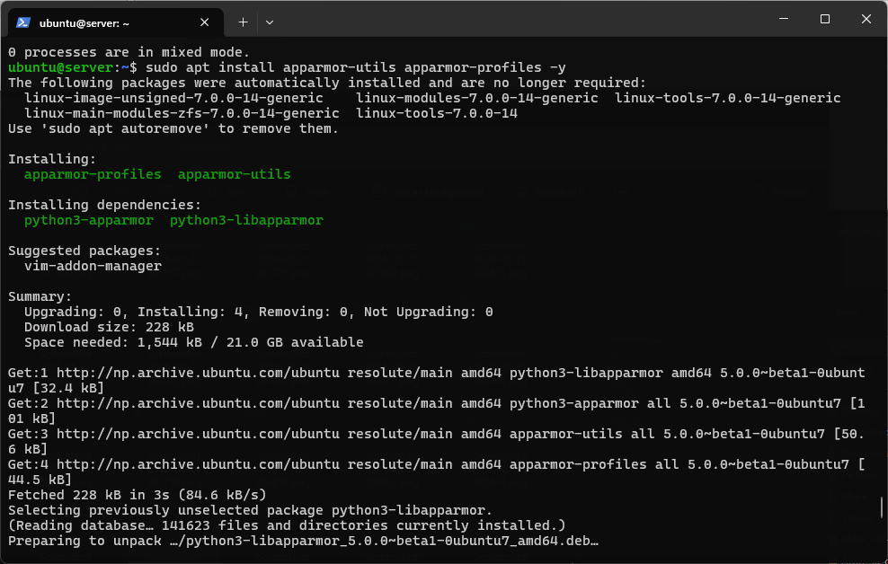
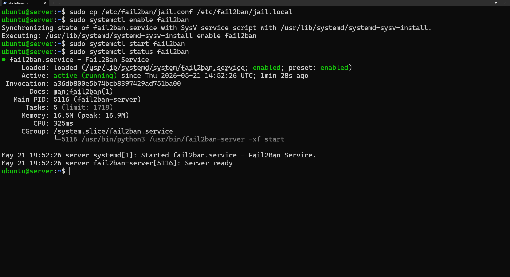
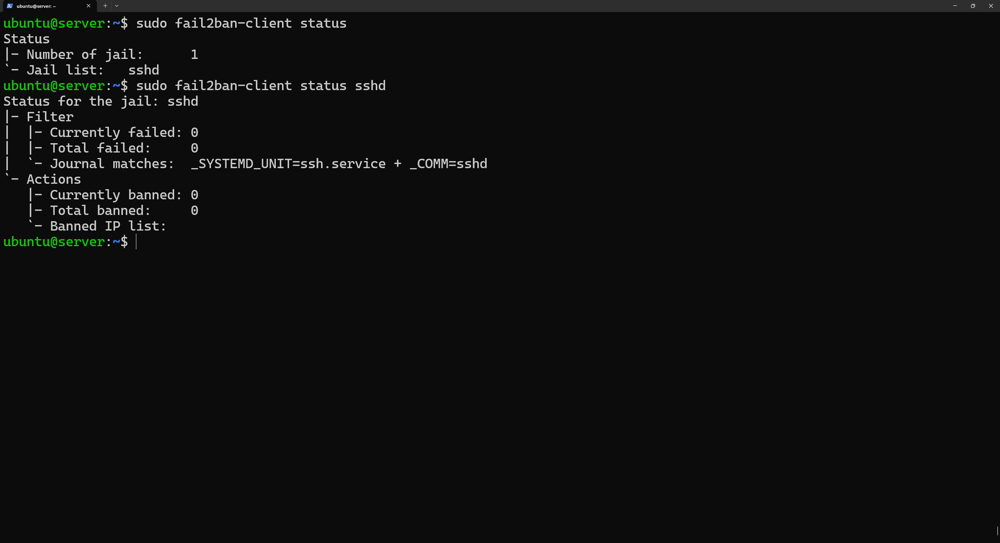
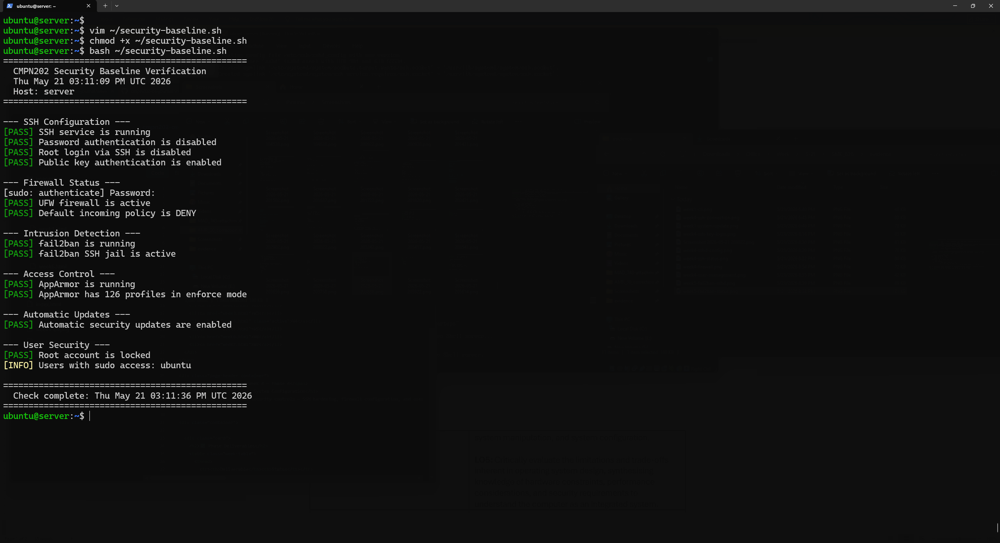
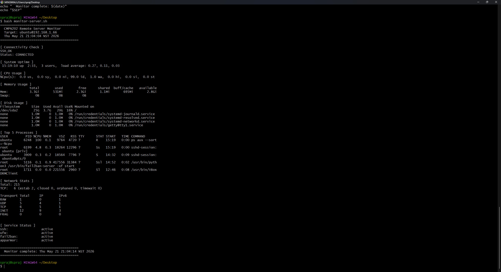

Implementing AppArmor, fail2ban, automatic updates, and developing security and monitoring scripts.
| Deliverable | Status |
|---|---|
| AppArmor access control configured and documented | Done |
| Automatic security updates configured | Done |
| fail2ban intrusion detection configured | Done |
| security-baseline.sh script created | Done |
| monitor-server.sh script created | Done |
AppArmor confines programs to a limited set of resources using per-program profiles. Even if a service is compromised, AppArmor limits what damage it can do.

Configuring unattended-upgrades to automatically apply security patches daily.
ubuntu@server:~$ sudo apt install unattended-upgrades -y ubuntu@server:~$ sudo dpkg-reconfigure --priority=low unattended-upgrades ubuntu@server:~$ cat /etc/apt/apt.conf.d/20auto-upgrades APT::Periodic::Update-Package-Lists "1"; APT::Periodic::Unattended-Upgrade "1";
fail2ban monitors log files and automatically bans IPs showing brute force behaviour. Configured to ban after 3 failed SSH attempts within 10 minutes for 1 hour.


Script runs on the server via SSH and verifies all 13 security configurations from Phases 4 and 5. Includes colour-coded PASS/FAIL output.

Script runs on the Windows workstation using Git Bash, connects via SSH key authentication, and collects 10 performance metrics from the server remotely.

This week's assignment had the most complex design setup yet. The combination of security measures such as firewall, SSH hardening, AppArmor, and fail2ban constitutes defense-in-depth security since any one method offers protection on its own, regardless of the other methods being effective or not.
Creating shell scripts entailed the use of bash scripting skills as well as an understanding of how the SSH command works. The monitor script runs command through SSH and passes them as arguments to SSH – a very useful technique in tools used in DevOps for command execution.
Challenge encountered: My initial problem with the monitor script arose from the presence of invisible encoding when I pasted code onto a terminal window. Solution is using Notepad to create file with UTF-8 encoding and saving as "All Files".
Trade-off identified: AppArmor adds per-syscall checking overhead and fail2ban continuously monitors log files. These security costs will be quantified in Week 6 performance testing.